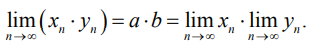

МАТЕМАТИЧЕСКИЙ АНАЛИЗ.
Определение. На множестве X задана функция ƒ, если определен закон, по которому каждому элементу x из множества X в соответствие ставится один, вполне определенный элемент y из множества Y.
Это записывается так: y=ƒ(x).
X называется областью определения функции, x — аргумент (независимая переменная, прообраз y), y — функция (зависимая переменная, образ x).
Рассмотрим пример функции.
Пусть X — пронумерованное множество столов: 1, 2, 3, …, 25;
Y — множество студентов, построенных по росту, последний — самый высокий. Предположим, что студентов одинакового роста в группе нет. Правило ƒ соответствия между x и y определим так: за первый стол садится самый маленький студент, за второй — повыше и т. д.
1. Пусть Y = {25 студентов}. Тогда ƒ является функцией.
2. Пусть Y = {24 студента}. ƒ функцией не является, так как двадцать пятому столу не поставлен в соответствие студент.
3. Пусть Y = {26 студентов}. ƒ является функцией.
4. Пусть Y = {26 студентов}. За двадцать пятый стол посадим двух студентов. Новый закон соответствия обозначим g. Закон g не является функцией, так как одному столу соответствует два студента.
5. Пусть Y = {24 студента}. Пусть самый маленький студент занял первый и второй стол. Закон соответствия обозначим h. h — функция (первому столу соответствует самый маленький студент и второму столу соответствует самый маленький студент).
В дальнейшем будем предполагать, что X, Y — числовые множества и Y — множество всех образов. Тогда Y называется областью значений функции ƒ.
Примеры числовых функций
1. y = x2.Область определения функции X = (-∞, +∞).
Область значений функции Y = (0, ∞).
Графиком функции является парабола (рис. 20).
2. y = √1-x2
Найдем область определения функции. Выражение, стоящее под корнем, должно быть неотрицательным, поэтому 1-x2 ≥ 0, т. е. (1 - x)(1 + x) ≥ 0. Методом интервалов решим это неравенство (рис. 21).
Получим -1 ≤ x ≤ 1. Таким образом, X = [−1; 1]. Понятно, что y принимает самое большое значение при x, равном 0, а самое маленькое значение при x, равном 1. Поэтому Y = [0; 1].
Графиком функции является верхняя полуокружность (рис. 22).
Действительно, y2 = 1-x2, а x2+y2 = 1 — уравнение окружности.
3. y = sign (x) (сигнум x).
Область определения этой функции X — множество всех действительных чисел. Область значений функции Y = {−1, 0, 1}.
График функции изображен на рис. 23.
Последовательности
Определение последовательности
Определение. Если каждому натуральному числу n (1, 2,…) в соответствие поставлено одно определенное число xn, то упорядоченное множество {x1, x2 ...,xn, ...} называется последовательностью.Здесь x1, x2... — члены или элементы последовательности; xn — общий член последовательности; n — его номер; {xn} — короткая запись последовательности.
Примеры последовательностей
Изображение последовательности на числовой прямой
Рассмотрим, как приведенные выше последовательности изобразятся на прямой.
Данная последовательность изображена на рис. 24.
Посмотрим, как в наших примерах ведут себя элементы последовательности при неограниченном увеличении n (n → ∞).
Элементы первой последовательности стремятся к 0 (xn → 0) при n, стремящемся к бесконечности (n → ∞) (пишут: xn → 0 при n → ∞), т. е. при больших n элементы последовательности xn мало отличаются от 0. Элементы третьей последовательности стремятся к 1 при n, стремящемся к бесконечности (xn → 1 при n → ∞). Элементы второй и четвертой последовательности при n, стремящемся к бесконечности, по модулю становятся неограниченно большими. Говорят, что эти последовательности являются бесконечно большими (xn → ∞ при n → ∞).
Окрестность
Определение. Окрестностью точки a радиуса ε (эпсилон) называется интервал (а − ε, а + ε) (рис. 28).Такая окрестность обозначается Oε(a), т.е Oε(a) = (a-ε, a+ε).
Предел последовательности
Определение. Предел последовательности xn при n, стремящемся к бесконечности (n → ∞), равен а, если для любой ε окрестности точки а все члены последовательности, начиная с некоторого номера, зависящего от ε, этой окрестности принадлежат.На рис. 29 изображены элементы некоторой последовательности, сходящейся к нулю. Для окрестностей Oε1, Oε2, Oε3изображены только правые половины. Окрестности Oε1 принадлежат все члены последовательности, начиная с x3. Окрестности Oε1принадлежат все члены последовательности, начиная с x5.
Бесконечно малая последовательность
Определение. Последовательность, предел которой равен нулю, называется бесконечно малой.
Примеры. Последовательности
являются бесконечно малыми. Для бесконечно малой последовательности введем запись: xn — б. м.
Бесконечно большая последовательность
Определение. Последовательность yn называется бесконечно большой (yn— б. б.), если для любой окрестности начала координат OE(0) члены последовательности, начиная с некоторого номера (зависящего от E), не принадлежат этой окрестности.
Последовательность n2 — бесконечно большая.
Теоремы о связи бесконечно больших и бесконечно малых последовательностей
Теорема 1. Пусть последовательность yn — бесконечно большая. Тогда последовательность xn=
1
/
yn
является бесконечно малой.Теорема 2. Пусть последовательность xn — бесконечно малая и xn ≠ 0, тогда последовательность yn=
1
/
xn
является бесконечно большой.Примеры. Последовательность (−1)nn — бесконечно большая, поэтому последовательность
1
/
(-1)nn
=
(-1)n
/
n
— бесконечно малая согласно теореме 1.Последовательность n2 — бесконечно большая, поэтому последовательность
1
/
n2
— бесконечно малая.Определение. Всякая последовательность, имеющая предел, называется сходящейся.
Теоремы о сходящихся последовательностях
Пусть последовательности xn и yn сходятся, т. е.
Теорема 3. Предел суммы (разности, произведения) двух сходящихся последовательностей равен сумме (разности, произведению) пределов исходных последовательностей:


Теорема 4. Пусть последовательность xn сходится к a, последовательность yn сходится к b, yn ≠ 0 и b ≠ 0. Тогда предел отношения xn к yn равен отношению пределов соответствующих последовательностей, т. е.
Примеры вычисления пределов
1. Найти предел последовательности
Разделим каждое слагаемое числителя на знаменатель. Получим
т. е. исходная последовательность равна сумме последовательностей
По теореме 3
2. Найти предел последовательности
Воспользоваться теоремой 4 для последовательностей

невозможно, так как они не являются сходящимися. Поэтому поделим числитель и знаменатель дроби
на n2. Получим

Последовательности

являются сходящимися. Следовательно, можно применить теорему 4:
(далее для вычисления пределов, стоящих в числителе и в знаменателе дроби, воспользуемся теоремой 3 о вычислении предела суммы двух последовательностей):
3. Найти предел последовательности

Заметим, что в числителе стоит многочлен первой степени, а в знаменателе — многочлен второй степени. Наибольшая степень равна 2. Поделим числитель и знаменатель дроби на n в наибольшей степени: на n2. Получим
Далее, применив теоремы 4 и 3, получим
Правило. Если общий член последовательности есть отношение двух многочленов и степень числителя меньше степени знаменателя, то предел последовательности равен нулю.